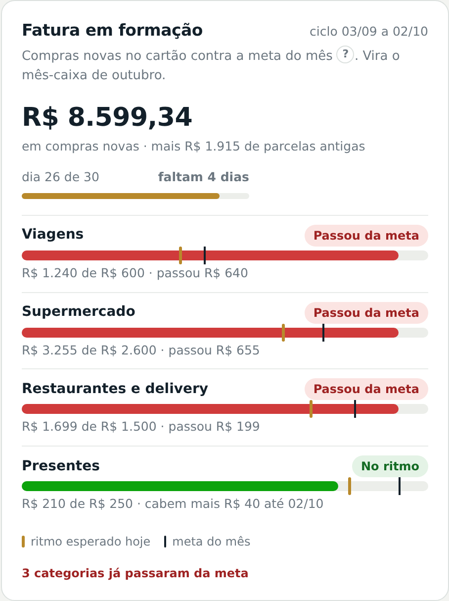
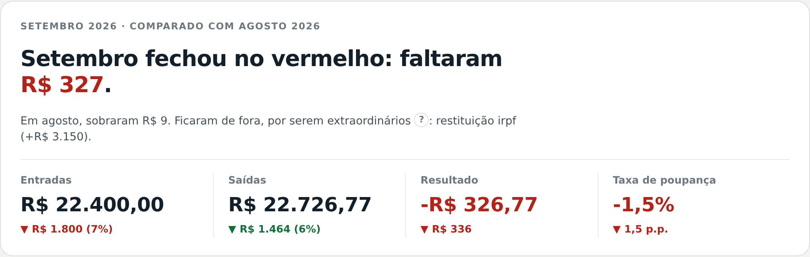
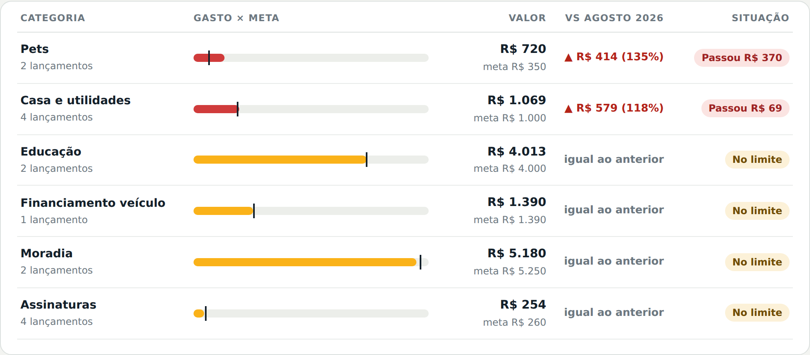
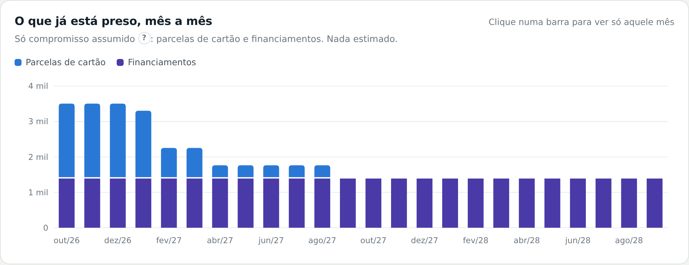
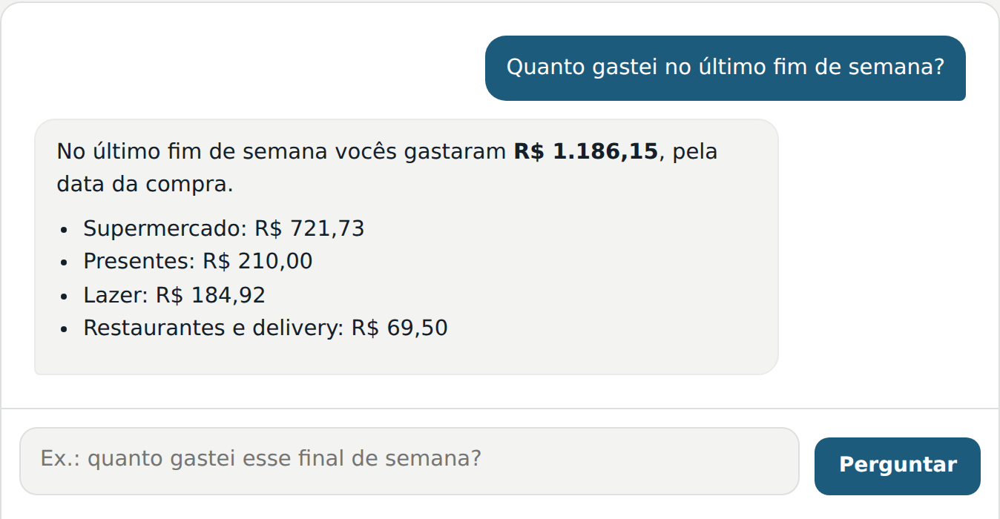

Organize uma vez. Depois, o controle é seu.
Em poucos encontros online, montamos na sua conta uma planilha que fecha ao centavo com o banco, um painel que mostra para onde foi o dinheiro e uma rotina de 30 minutos por mês. Preço fechado, sem mensalidade.
Maria Alice Antonialli
10 anos em planejamento e controle orçamentário no Itaú

R$ 0,00
de diferença entre planilha, extrato e fatura. O número só vale quando fecha ao centavo.
Preço fechado
Implantação com começo, meio e fim. Sem mensalidade e sem depender de ninguém depois.
Tudo no seu nome
Sem senha, sem extrato e sem acesso às suas contas. Seus dados não saem do seu computador.
Situações comuns para quem cuida do dinheiro da casa
“Todo mês falta dinheiro e eu não sei exatamente onde foi.”
“Já tentei planilha e aplicativo. Duas semanas depois, virou ficção.”
“A fatura do cartão chega e eu levo susto.”
“Lá em casa cada um tem um número na cabeça, e a conversa sobre dinheiro não anda.”
“Não sei quanto do salário do mês que vem já está comprometido em parcelas.”
“Tenho consultório ou PJ e não separo o que é da empresa e o que é da casa.”
Por que as planilhas costumam falhar
Elas dependem de alguém lembrar de anotar cada gasto. Este método inverte a lógica: ninguém digita nada. O banco já registrou tudo; o trabalho é transformar extratos e faturas numa tabela organizada, e a inteligência artificial faz isso bem e rápido.
Uma implantação, não uma assinatura
Eu organizo junto com você até o método rodar sem mim. Depois disso, a rotina é sua.
Horas de implantação, não mensalidade
Você contrata um preço fechado, com começo, meio e fim. Não existe cobrança recorrente da M.A.
Tudo fica na sua conta
Planilha, painel, assinatura de IA e, se você quiser, a conexão automática com o banco (Open Finance) são criados no seu nome. Nos encontros, você compartilha a tela e opera; eu oriento.
Você fecha o mês em cerca de 30 minutos
Os fechamentos acompanhados existem para isso: no primeiro eu conduzo, no segundo você conduz e, no último, você faz e eu só confiro.
Provar, capturar, soltar
A ideia central é conciliar: comparar duas fontes independentes até a diferença dar zero. Se o total da fatura é R$ 4.321,55, o débito no extrato tem de ser R$ 4.321,55. Enquanto não fechar em R$ 0,00, o número não é confiável.
A conciliação fecha ao centavo. É o que faz a família confiar no próprio número.
As regras da casa (“Pix para fulano é supermercado”) viram uma tabela, o De-Para. O mês seguinte fica rápido.
Um lembrete no dia do vencimento da fatura. Sem esse gatilho, a rotina morre no segundo mês.
5 ideias que mudam a forma de ver o orçamento
- Regime de caixa: o gasto conta quando o dinheiro sai da conta.
- Mês do cartão: é o mês do vencimento da fatura, não o da compra.
- Pagar a fatura não é despesa: lançar as compras e também o pagamento conta o mesmo gasto duas vezes.
- De-Para: a IA aprende com as suas correções.
- Parcelas: são o futuro que já foi gasto.
Em 4 passos
-
Conversa inicial gratuita
10 minutos para entender a rotina da casa e indicar o pacote certo. Antes, você responde um pré-formulário de 2 minutos.
-
Montagem
Montamos na sua conta, com você na tela, a planilha, o painel e as regras da sua casa (e a conexão com o banco, se quiser).
-
Fechamentos acompanhados
Do “eu conduzo” ao “você conduz e eu só confiro”.
-
Autonomia
Você fecha o mês em cerca de 30 minutos. Se travar, existe a sessão avulsa.
Cada tela responde uma pergunta da casa
Escolha uma pergunta para ver a tela correspondente. Os números são de uma família fictícia; no seu painel, entram os seus.




Experimente o painel de demonstração
Troque o período, abra as metas, veja a fatura em formação e faça perguntas. Na versão de demonstração as perguntas são simples; no painel da sua família, elas vão além.
Uma pasta única, no computador da família
- Planilha oficial do orçamento, onde fica toda a verdade.
- Painel visual que abre com duplo clique e funciona sem internet: visão do mês, evolução, metas, lançamentos, compromissos e um guia de leitura.
- As regras da casa (De-Para) e as convenções já decididas.
- Guia do método em PDF e os prompts mensais, em 1 página.
- Um lembrete no celular no dia do vencimento da fatura.
As 3 conferências que provam o orçamento
| Total de cada fatura × débito no extrato | R$ 0,00 |
|---|---|
| Saldo inicial + lançamentos × saldo final do extrato | R$ 0,00 |
| Lançamentos sem categoria (“A classificar”) | < 3% |

Maria Alice Antonialli
Durante dez anos, no Itaú, meu trabalho foi planejar e controlar orçamento: fazer o número fechar e explicar por que ele não fechava. Quando olhei para o orçamento da minha própria família, percebi que nenhum aplicativo entregava o que eu fazia no banco: a prova de que o número está certo.
Construí um método, testei em casa até fechar mês após mês ao centavo, e hoje implanto o mesmo método para outras famílias e para profissionais liberais. Eu organizo com você; depois, o controle é seu.
- 10 anos no Itaú em PMO, planejamento e controle orçamentário
- Empresária e gestora de projetos e processos
- Criadora do método Provar, Capturar, Soltar
Preço fechado, sem mensalidade
Na conversa de 10 minutos, indico o pacote que combina com a rotina da sua casa.
Implantação Essencial
Para a casa com rotina mais simples, em que quase tudo passa por uma conta e um ou dois cartões.
- Montagem completa na sua conta
- 2 fechamentos acompanhados
- Suporte por mensagem por 60 dias
- Prazo total: cerca de 2 meses
Implantação Completa
Para rotinas com parcelamentos e despesas divididas, como contas dos pais rateadas entre irmãos.
- Montagem completa na sua conta
- 3 fechamentos acompanhados
- Revisão de metas
- Suporte por mensagem por 90 dias
Profissionais liberais
Para médicos e outros profissionais que precisam separar pró-labore, conta da empresa e orçamento da casa.
- Escopo próprio, definido na conversa inicial
- Separação clara entre PF e PJ
Kit gratuito Grátis
Guia do método em PDF, planilha-modelo e prompts prontos, para quem quer tentar por conta própria antes de contratar.
Sessão avulsa R$ 250 / 1 hora
Para quem já fez a implantação: revisão, dúvidas ou aquele mês que não fechou e você não achou a linha.
- Assinatura de IA com Projetos (ex.: Claude Pro), cerca de US$ 20 por mês, cobrada em dólar, no seu nome.
- Opcional: conexão automática com o banco via Open Finance (ex.: Banco MCP, a partir de R$ 19,90 por mês para 1 banco). Sem ela, o método funciona com os PDFs de extrato e fatura.
Formas de pagamento: Pix ou cartão. 50% na contratação e 50% após o primeiro fechamento, ou em até 3x.
Seus dados ficam com você
Não guardo dados bancários, não acesso contas e não tenho acesso ao seu Open Finance. As assinaturas ficam no seu nome.
Sem senha, sem extrato
Nos encontros, você compartilha a tela e opera. Eu oriento, mas nunca recebo seus arquivos.
Tudo no seu nome
Planilha, painel e assinatura de IA (e Open Finance, se quiser) são criados na sua própria conta.
LGPD desde o início
Deixar os dados com o titular é mais seguro para a família e mais simples do ponto de vista da Lei Geral de Proteção de Dados.
Saiba mais na política de privacidade.
Tire suas dúvidas
Você acessa minha conta bancária?
Não. Nada fica comigo: nem senha, nem extrato, nem conexão com o banco. Tudo é criado na sua conta e você opera na sua tela.
Preciso saber Excel?
Não. Você não digita os gastos: a IA transforma os dados do banco em planilha. O seu papel é dizer o que cada gasto é.
Depois da implantação, sigo por conta própria?
Sim, esse é o objetivo. O suporte por mensagem cobre 60 ou 90 dias e, depois, existe a sessão avulsa se precisar.
Tenho de pagar alguma assinatura?
Sim, uma assinatura de IA com Projetos (ex.: Claude Pro, cerca de US$ 20 por mês), no seu nome. A conexão automática com o banco é opcional.
Quanto tempo por mês depois de pronto?
Cerca de 30 minutos, no dia do vencimento da fatura.
Meu cônjuge tem outra conta e outro cartão. Entra?
Deve entrar. Um mês sem uma das contas parece um rombo que não existe.
Funciona para médico ou quem tem PJ?
Sim, com escopo próprio (PF + PJ). O valor é definido na conversa inicial.
É consultoria de investimento?
Não. É organização e controle do orçamento. Não indico investimentos.
Posso testar antes?
Sim: navegue pelo painel de demonstração ou peça o kit gratuito e tente por conta própria.
Atende fora da minha cidade?
Sim. Todos os encontros são online, para todo o Brasil.
Conte sua situação em 2 minutos e agende uma conversa de 10
Responda o pré-formulário. Ao enviar, o seu WhatsApp abre com as respostas já escritas — é só tocar em enviar. Assim a Maria Alice chega na conversa de 10 minutos sabendo da sua rotina e já indica o pacote certo.
- Conversa gratuita, 100% online, para todo o Brasil.
- Segunda a sexta, das 9h às 18h.
- WhatsApp: (11) 99429-0680
- E-mail: lilice.antonialli@gmail.com
Não pedimos valores, renda, senhas nem dados bancários. As respostas não ficam guardadas neste site: vão direto do seu WhatsApp para o da Maria Alice.